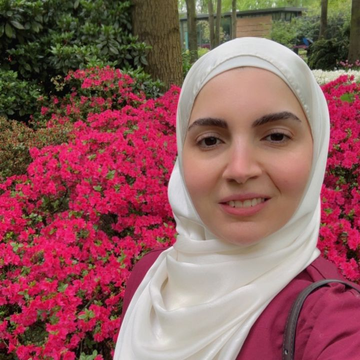

رعاية طبية متكاملة لجميع أفراد الأسرة، تركّز على الوقاية، إدارة الأمراض المزمنة، وتعديل نمط الحياة للوصول إلى صحة مستدامة.
Comprehensive medical care for the whole family, focusing on prevention, chronic disease management, and lifestyle modification for sustainable health.
مستشفى د. سليمان الحبيب، الخبر
Dr. Sulaiman Al Habib Hospital, Al Khobar
يومياً عدا الجمعة (7 ص - 3 فجراً)
Everyday except Fri (7 AM - 3 AM)
